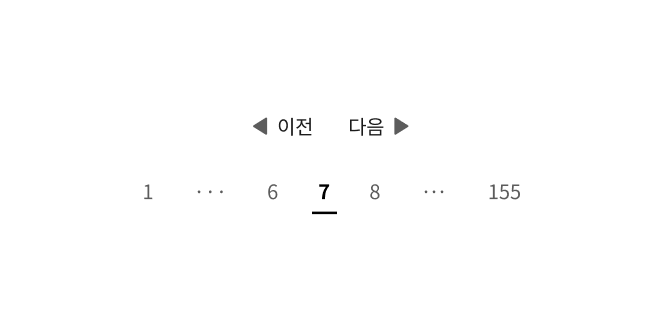
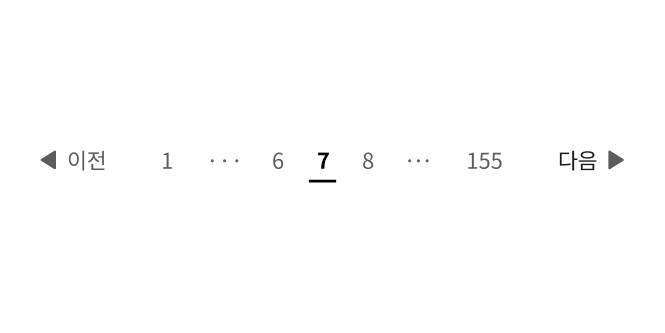
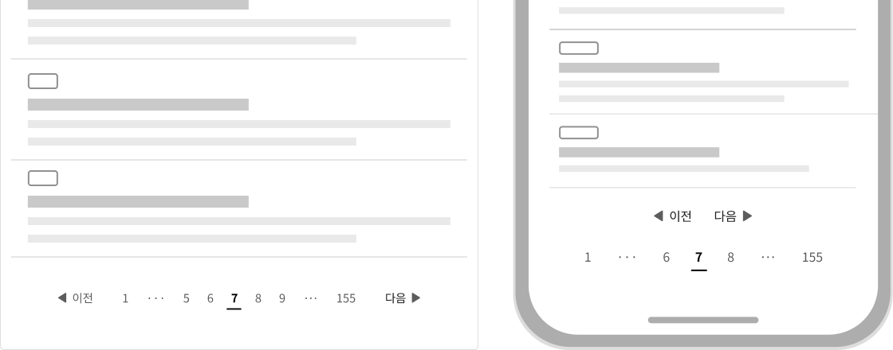
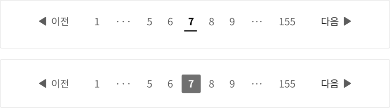

컴포넌트페이지네이션 (Pagination)
페이지네이션은 많은 양의 콘텐츠를 탐색하기 쉽도록 여러 화면에 나누고, 분할된 화면을 탐색하는 데 사용되는 요소이다.
용례
사용하기 적합한 경우
-
데이터 집합에서 특정 항목을 찾는 것이 사용자의 목표일 때
데이터 집합에서 세부적인 정보를 확인하는 것이 아니라 특정 항목을 찾는 것이 중요한 경우, 데이터 집합을 여러 화면으로 구분하면 사용자가 데이터를 더 빨리 훑어 보고 탐색할 수 있다.
- 한 화면에 모든 콘텐츠를 표시하면 화면 로딩 시간이 오래 걸릴 때
데이터 집합을 한 화면에 표시하였을 때 목록의 높이가 뷰포트의 2배를 초과하거나, 전체 항목 개수가 20개를 초과하는 경우 페이지네이션의 사용을 검토한다.
사용하기 적합하지 않은 경우
-
데이터 집합을 의미적으로 그룹화하고자 할 때
긴 데이터 집합을 특정 주제나 범주로 구분하고자 하는 경우에는 별도 정보 구조로 포함시켜 사이드 메뉴를 통해 탐색하는 것이 적합하다.
-
전체 데이터 수가 적을 때
데이터 집합을 한 화면에 표시하였을 때 목록의 높이가 뷰포트의 2배를 초과하지 않거나 전체 항목 개수가 20개 이내인 경우 한 화면에서 목록을 탐색하도록 하는 방안을 고려한다. 필요한 경우 필터링/조회 패턴을 활용하여 한 화면에 표시된 데이터 목록의 탐색을 도울 수 있다.
-
무한 스크롤 기능을 사용할 때
사용자가 화면을 아래로 스크롤할 때 추가적으로 데이터가 로드되는 무한 스크롤 기능을 사용하는 경우, 페이지네이션을 사용하지 않는다.
무한 스크롤은 키보드 사용자에게 문제를 야기할 수 있으므로 사용하지 않는 것이 좋으며, 항목 개수에 대한 추정치가 있고 사용자가 항목 목록의 끝으로 이동할 필요가 없을 때만 사용한다.
유형
숫자 링크 목록
분할된 화면의 순서를 숫자로 표시한다. 숫자 링크를 눌러 원하는 순서의 화면 목록으로 직접 이동하거나 이전/다음 버튼을 눌러 화면을 순차적으로 탐색할 수 있다. 첫 화면과 마지막 화면 숫자 링크가 항상 표시되므로 사용자는 목록의 시작이나 끝으로 빠르게 이동할 수 있다.
화면 직접 이동
숫자 링크 목록과 함께 사용하며, 사용자가 원하는 화면 숫자를 직접 페이지 입력하여 이동할 수 있다. 숫자 링크 목록으로만 탐색하기 어려운 대규모의 데이터 목록 탐색에 적합하다.
목록 확장
더보기 버튼을 이용하여 화면 전환 없이 데이터 목록을 기존 데이터 목록의 하단으로 추가하여 제공한다. 무한 스크롤보다 예측 가능하고 심각한 접근성 문제를 야기하지 않으나 추가되기 전의 항목으로 돌아가 원하는 정보를 탐색하는 것이 어려울 수 있다.
구조
숫자 링크 목록
- 1. 이전/다음 버튼: 화면 목록을 앞/뒤로 탐색하는 데 사용되는 버튼. 아이콘과 텍스트를 조합하여 제공하거나, 아이콘과 텍스트를 단독으로 사용할 수 있음
- 2. 숫자 링크 목록: 표시된 숫자의 화면으로 이동할 수 있는 링크. 목록의 첫 번째 요소는 숫자 '1', 마지막 요소는 가장 마지막 화면의 숫자를 표시함
- 3. 말줄임표: 번호 링크 사이에 생략된 숫자가 있음을 표시함
- 4. 현재 화면 식별자: 사용자가 현재 탐색하고 있는 화면을 나타냄
직접 이동
- 1. 숫자 입력 필드: 탐색하고자 하는 화면 번호를 입력할 수 있는 입력 필드. 입력 전에는 사용자가 현재 보고 있는 화면 번호를 보여줌
- 2. 전체 화면 수 레이블: 페이지 숫자 입력 필드 오른쪽에 배치되어 전체 화면 수를 보여줌
- 3. 이동 버튼: 실행 시 숫자 입력 필드에 입력된 숫자에 해당하는 화면으로 이동함
목록 확장
- 1. 더보기 버튼: 실행 시 항목을 추가적으로 표시함. "더보기"라는 텍스트와 표시된 항목 수, 전체 항목 수를 안내하는 분수가 레이블로 제공됨
사용성 가이드라인
-
페이지네이션에는 첫/마지막 화면, 이전/다음 화면으로
이동할 수 있는 수단을 제공한다.
목록 확장형 페이지네이션을 제외하고 사용자는 어떤 페이지에서든 항상 첫 화면, 마지막 화면, 이전 화면, 다음 화면으로 이동할 수 있어야 한다.
-
전체 화면 수를 표시한다.
사용자가 전체 데이터 목록 수를 알 수 있도록 전체 화면 수를 제공해야 한다.
-
번호 링크에 현재 화면 숫자를 강조하여 표현한다.
사용자가 현재 몇 번째 화면을 탐색하는지 명확하게 변별할 수 있도록 현재 화면 숫자 링크를 적절하게 강조하여 표현한다. 목록 상단에 별도의 텍스트 정보를 제공함으로써 탐색 중인 화면의 인지를 도울 수 있다.
[모범 사례]

-
페이지네이션은 전체 서비스에서 일관된 영역에
배치한다.
페이지네이션은 유형에 상관없이 목록 하단에 중앙 정렬하여 사용자가 전체 사이트에 걸쳐 일관된 영역에서 접근할 수 있도록 한다.
-
페이지네이션은 한 화면에 하나만 사용한다.
페이지네이션을 이용하여 구분하고 탐색해야 할 항목이 한 화면에 여러 개 제공되면 복잡성이 증가하고 여러 개의 목록 및 페이지네이션의 용도와 역할 구분이 어려워진다.
-
숫자 링크 목록에는 말줄임표를 포함하여 10개 이내의
항목을 표시한다.
필요 이상으로 많은 숫자 링크 목록을 표시하면 인지적 부담이 증가한다.
-
화면당 항목 수를 최적화한다.
화면당 항목 수가 너무 많으면 사용자를 압도할 수 있고, 지나치게 적을 경우 정보 탐색이 불편할 수 있다. 각 화면에 표시되는 항목 수를 결정할 때는 화면 로딩 시간, 성능, 사용자의 스크롤 기본 설정 등을 고려한다. 사용자가 각 화면에 표시할 항목 수를 제어하는 컴포넌트를 필터링·정렬 옵션으로 추가하여 사용자가 원하는 방식대로 항목을 탐색하도록 할 수 있다.
플랫폼에 대한 고려 사항
-
화면 너비가 충분하지 않은 경우 이전/다음 버튼, 숫자
링크 목록을 수직으로 배치한다.
화면 너비가 충분하지 않다면 데이터 목록 하단에 이전/다음 버튼을 배치하고 그 아래에 숫자 링크 목록을 배치한다. 선형적이고 순차적인 방식으로 탐색하는 수단을 더 쉽게 접근할 수 있는 영역에 배치하여, 작은 화면에서 일련의 숫자 링크 목록을 탐색하는 데서 발생하는 피로를 감소시키고 인접 영역을 실수로 터치하지 않도록 한다.
[모범 사례]
[피해야 할 사례]
 -
화면 너비가 충분하지 않은 경우 숫자 링크 목록은
말줄임표를 포함하여 최대 7개 링크를 표시한다.
더 많은 항목이 제공될 경우, 각 링크를 터치할 수 있는 충분한 영역을 확보하기 어렵다.
[모범 사례]
 -
화면 크기에 상관없이 전체 화면 수를 일정하게 유지한다.
어떤 설정과 디바이스 환경에서 서비스를 이용하더라도 동일한 항목은 동일한 위치에서 찾을 수 있도록 전체 화면 수와 각 화면에 표시되는 항목 수를 일정하게 유지해야 한다.
접근성 가이드라인
-
페이지네이션의 컨테이너가 내비게이션 섹션임을 스크린
리더에서 인지할 수 있도록 한다.
페이지네이션의 전체 컨테이너는 <nav>로 감싸거나 WAI-ARIA 영역을 role="navigation”으로 지정하여 스크린 리더에서 내비게이션 요소임을 인지할 수 있도록 제공해야 한다. 내비게이션 섹션에 aria-label 속성을 활용하여 어떤 데이터 집합에 대한 페이지네이션인지에 대한 설명을 제공하면 스크린 리더 사용자가 보다 명확하게 페이지네이션의 역할을 인지할 수 있다.
- KWCAG 2.2 제목 제공
- WCAG 2.1 Info and Relationships
-
숫자 링크 목록의 구조를 표현한다.
스크린 리더 사용자가 페이지네이션의 항목 수를 빠르게 파악할 수 있도록 <ul>, <li> 태그를 활용하여 계층 구조로 정보를 제공해야 한다.
- KWCAG 2.2 제목 제공
- WCAG 2.1 Info and Relationships (A)
-
스크린 리더에서 확인할 수 있는 현재 화면 정보를
제공한다.
스크린 리더 사용자가 시각적으로 표시된 현재 화면 정보를 동등하게 전달받을 수 있도록 현재 화면 링크의 href 속성을 삭제하고 aria-current=”true”를 부여한다.
- WCAG 2.1 Name, Role, Value (A)
-
현재 화면 숫자 링크를 색상만으로 구분하지 않는다.
현재 화면 숫자 링크는 밑줄, 배경 반전, 텍스트 크기 조정 등의 방식을 활용하여 다른 링크와 명확하게 구분되어야 한다.
- KWCAG 2.2 색에 무관한 콘텐츠 인식
- WCAG 2.1 Use of Color (A)
[모범 사례]
[피해야 할 사례]
-
숫자 링크에 적절한 접근 가능한 이름을 제공한다.
스크린 리더 사용자가 숫자 링크의 용도를 보다 명확하게 인지할 수 있도록 aria-label=”페이지 1”, aria label=”페이지 2” 또는 title=”페이지”와 같은 방식으로 접근 가능한 이름이나 보조적 설명을 제공한다. 마지막 화면의 경우, aria-label=”마지막 페이지, [숫자]” 또는 title=”마지막 페이지”로 설명을 제공한다.
- KWCAG 2.2 적절한 링크 텍스트
- WCAG 2.1 Headings and Labels (AA)
-
이전/다음 화면 이동 버튼을 아이콘으로만 제공하는 경우
이름을 제공해야 한다.
aria-label=”이전 페이지”, aria-label=”다음 페이지”와 같은 방식으로 버튼에 접근 가능한 이름을 제공해야 한다.
- KWCAG 2.2 적절한 링크 텍스트
- WCAG 2.1 Link Purpose (In Context) (A)
-
페이지네이션의 구성 요소를 적절한 크기로 표현하고
영역 간 구분을 제공한다.
마우스 커서나 손가락으로 선택할 수 있도록 충분히 큰 버튼을 제공하고 실수를 방지하기 위해 버튼 간 충분한 간격을 확보한다. 요소의 적절한 크기는 버튼, 링크 컴포넌트 가이드라인을 참조한다.
- KWCAG 2.2 콘텐츠 간의 구분
- KWCAG 2.2 조작 가능
- WCAG 2.1 Target Size (AAA)
-
페이지네이션의 구성 요소를 일관된 순서로 제공한다.
화면 너비와 시각적 배치에 상관없이 이전 버튼, 숫자 링크 목록, 다음 버튼, 페이지 숫자 입력 필드, 전체 화면 수 레이블, 이동 버튼 순서로 제공한다.
- KWCAG 2.2 콘텐츠의 선형화
- WCAG 2.1 Meaningful Sequence (A)
-
목록 확장 페이지네이션을 사용할 때, 초점 이동 순서에
유의한다.
더보기 버튼을 눌러 새로운 항목이 생성되었을 때, 새로 생성된 항목 중 가장 첫 번째 항목으로 Focus 이벤트가 발생해야 한다.
- KWCAG 2.2 초점 이동과 표시
- WCAG 2.1 Focus Order (A)
상호작용 가이드라인
숫자 링크 목록
| 구분 | 설명 |
|---|---|
| Click | 기본 상태의 이전/다음 버튼, 숫자 링크를 Click 하면 해당 페이지로 이동한다. |
| Enter | 기본 상태의 이전/다음 버튼, 숫자 링크가 초점을 가진 상태에서 Enter 키를 누르면 해당 화면으로 이동한다. |
페이지 직접 이동
| 구분 | 설명 |
|---|---|
| Click | 숫자 입력 필드에 숫자를 입력한 후 이동 버튼을 Click 하면 해당 화면으로 이동한다. |
| Space | 숫자 입력 필드에 숫자를 입력한 후 이동 버튼이 초점을 가진 상태에서 Space 키를 누르면 해당 화면으로 이동한다. |
목록 확장
| 구분 | 설명 |
|---|---|
| Click |
더보기 버튼을 Click 하면 목록과 더보기 버튼 사이에 새로운 항목이 생성된다. 화면은 새로 생성된 항목 중 첫 번째 항목으로 스크롤 되며, 해당 요소에 Focus 이벤트가 발생한다. 표시된 항목 수 정보가 실제 내용에 맞추어 갱신된다. |
| Space |
더보기 버튼이 초점을 가진 상태에서 Space 키를 누르면 목록과 더보기 버튼 사이에 새로운 항목이
생성된다. 화면은 새로 생성된 항목 중 첫 번째 항목으로 스크롤 되며, 해당 요소에 Focus 이벤트가 발생한다. 표시된 항목 수 정보가 실제 내용에 맞추어 갱신된다. |